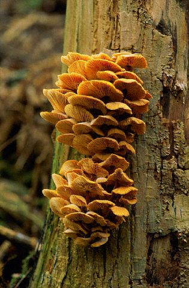

library(igraph) # graph manipulation
library(sbm) # stochastic bloc model
library(tidyverse) # data manipulation
library(aricode) # clustering measures comparisonGraph Clustering: Spectral methods and Stochastic Blockmodels
An illustration on antogonistic tree/fungus network
1 Introduction
This tutorial introduces the graph clustering techniques seen during the lectures, that is,
- Spectral methods, mainly spectral clustering and its variants
- Model-based approaches, namely, stochastic blocmodels (binary, weigthed, bipartite, w/o covariates)
These methods will be illustrated for the analysis of an (ecological) network data set.
1.1 Requirements
The packages required for the analysis are sbm and igraph (sbm Team großBM (Barbillon, Chiquet, Donnet, Léger) (2021) is based on the package blockmodels Leger (2021)), plus some others for data manipulation and representation.
Some extra packages can be obtained for fancier representations,
Show the code
library(corrplot) # plot of covariance/correlation matrices
library(ggraph)
library(RColorBrewer)
theme_set(theme_bw())
fancy_network <- function(mygraph, group) {
V(mygraph)$party <- as.character(group)
V(mygraph)$degree <- degree(mygraph)
angle <- 90 - 360 * 1:igraph::gorder(mygraph) / igraph::gorder(mygraph)
V(mygraph)$hjust <- ifelse(angle < -90, 1, 0)
V(mygraph)$angle <- ifelse(angle < -90, angle + 180, angle)
p <- ggraph(mygraph, layout = 'linear', circular = TRUE) +
geom_edge_arc(alpha = 0.25, show.legend = FALSE) +
# geom_node_text(aes(label = party, x = x*1.05, y=y*1.05, angle = angle, hjust = hjust), size = 3) +
geom_node_point(aes(colour = party, size = degree), alpha = 0.5) +
scale_colour_manual(values = c(brewer.pal(6,"Paired"),"maroon4","springgreen", "tan4","plum","brown4","burlywood",brewer.pal(8, "Dark2"), "navy")) +
theme_graph(base_size = 20)
invisible(p)
}1.2 Data set: antagonistic tree/fungus interaction network

We consider the fungus-tree interaction network studied by Vacher, Piou, and Desprez-Loustau (2008), available with the package sbm:
data("fungusTreeNetwork")
str(fungusTreeNetwork, max.level = 1)
#> List of 5
#> $ tree_names : Factor w/ 51 levels "Abies alba","Abies grandis",..: 1 2 3 14 42 4 5 6 7 8 ...
#> $ fungus_names: Factor w/ 154 levels "Amphiporthe leiphaemia",..: 1 2 3 4 5 6 7 8 9 10 ...
#> $ tree_tree : num [1:51, 1:51] 0 12 9 3 2 2 0 0 2 7 ...
#> $ fungus_tree : int [1:154, 1:51] 0 0 0 0 1 1 1 0 0 0 ...
#> $ covar_tree :List of 3This data set provides information about 154 fungi sampled on 51 tree species. It is a list with the following entries:
tree_names: list of the tree species namesfungus_names: list of the fungus species namestree_tree: weighted tree-tree interactions (number of common fungal species two tree species host)fungus_tree: binary fungus-tree interactionscovar_tree: covariates associated to pairs of trees (namely genetic, taxonomic and geographic distances)
During this tutorial we are going to explore successive variants of the Stochastic Blockmodels to analyse binary, weighted, then bipartite network, also by introducing external information via covariates.
2 Analysis of the tree/tree data
The tree-tree interactions result into a simple network.
2.1 Tree-tree binary interaction networks
We first consider the binary network where an edge is drawn between two trees when they do share a least one common fungi. Eventually, we will assume that our matrix is the realization of the SBM:
\begin{aligned} (Z_i) \text{ i.i.d.} \qquad & Z_i \sim \mathcal{M}(1, \alpha) \\ (Y_{ij}) \text{ indep.} \mid (Z_i) \qquad & (Y_{ij} \mid Z_i=k, Z_j = \ell) \sim \mathcal{B}(\pi_{k\ell}) \end{aligned}
Questions
- Extract the binary tree-tree adjacency matrix and plot it (
plotMyMatrix). Remove isolated nodes. - Construct and build an igraph object to plot the network.
- Perform hierarchical clustering with modularity and edge betweenness.
- Implement a variant of the spectral clustering and test them on this data. Plot the corresponding reordered adjacency matrix.
- Adjust a simple binary SBM with
estimateSimpleSBM. Become familiar with objectsimpleSBM. - Select a model via ICL. Explore/check models with similar ICL (using
$setModel(),$storedModel)
2.2 Weighted interaction network with Poisson model
Instead of considering the binary network tree-tree we may consider the weighted network where the link between two trees is the number of fungi they share.
\begin{aligned} (Z_i) \text{ i.i.d.} \qquad & Z_i \sim \mathcal{M}(1, \pi) \\ (Y_{ij}) \text{ indep.} \mid (Z_i) \qquad & (Y_{ij} \mid Z_i=k, Z_j = \ell) \sim \mathcal{P}(\exp(\alpha_{kl})) = \mathcal{P}(\lambda_{kl}) \end{aligned}
- Adjust a collection of Poisson SBM, explore the models.
- Adjust spectral methods (you might need to adapt your spectral clustering function to weighted graphs)
- Compare spectral, binary SBM and Poisson SBM with ARI/NID (package
aricode) and alluvial plots (plotAlluvial)
2.3 Including covariate effects
We have on each pair of trees 3 covariates, namely the genetic distance, the taxonomic distance and the geographic distance.
Each covariate has to be introduced as a matrix: X^k_{ij} corresponds to the value of the k-th covariate describing the couple (i,j).
Z_i \sim^{\text{iid}} \mathcal{M}(1, \alpha) \\ Y_{ij} \mid Z_i=k, Z_j = \ell \sim \mathcal{P}(\exp(\pi_{kl} + x_{ij}^\intercal \theta)) = \mathcal{P}(\gamma_{kl}\exp(x_{ij}^\top \theta))
Questions
- Plot the data matrix of covariates
- Use k-means or hierarchical clustering to cluster the covariates data, and compare with the previous graph clustering obtained
- Adjust a Poisson SBM with covariates (1, 2, all of them).
- Compare the obtained clustering with ARI/NID and alluvial plots
- Use ICL to select the “best” model among all the Poisson models.
3 Analysis of the tree/fungi data with Bipartite SBM
We now consider the tree-fungi interaction network.
Z^R_i \sim^{\text{iid}} \mathcal{M}(1, \alpha^R) \\ Z^C_i \sim^{\text{iid}} \mathcal{M}(1, \alpha^C) \\ Y_{ij} \mid Z^R_i=k, Z^C_j = \ell \sim \mathcal{f}(\gamma_{k\ell}, x_{ij}^\top \theta)
Redo the whole analysis, using this time a bipartite SBM.
4 References
Leger, Jean-Benoist. 2021. “Blockmodels: Latent and Stochastic Block Model Estimation by a ’v-EM’ Algorithm.” https://cran.r-project.org/package=blockmodels.
Team großBM (Barbillon, Chiquet, Donnet, Léger). 2021. “sbm: Stochastic Blockmodels.” https://cran.r-project.org/package=sbm.
Vacher, Corinne, Dominique Piou, and Marie-Laure Desprez-Loustau. 2008. “Architecture of an Antagonistic Tree/Fungus Network: The Asymmetric Influence of Past Evolutionary History.” PloS One 3 (3): e1740.